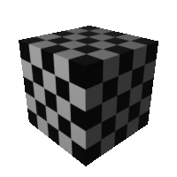
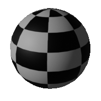
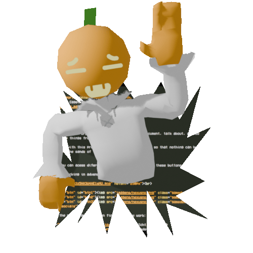
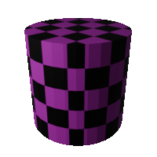

The Nimbos Cage
Hello. Welcome to "Dr_Nimbos Personal Blog" here I document, talk about, review or just store things from my life. My main hope with this project, is to be a time capsule, so that nothing can be forgotten to the sands of time...
Anyway, you can acess diferents parts of my site through these buttons. Thanks for checking in advence S2.



Quickstuff about me:

- What i do: I do lot's of things, including, Game Development and Programming, 3D Modelling and Rendering, also an Ilustrator and Video Editor, and the many small stuff in between
- Main Artistic Inspirations: Anything Surrealistic and Horror
- Favorite Game: Half Life 2
- Favorite Movie: Jurassic Park